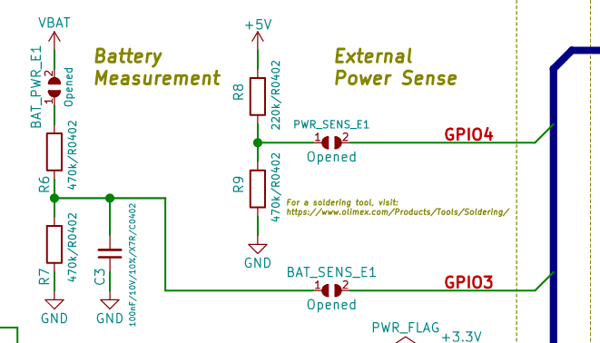

Board's applications
Both applications are structured in the following way to allow you to follow the exercises:
Application::init- initialise any peripheral that will be used for theApplication
Application:run- spawns all tasks on the embassy executor needed for ourApplication.power_system::Application::runonboard_computer::Application::runpower_system::Application::init
- An embassy task
fn run_*(..)for each exercise
Power System Application (power-system folder)
Battery and power sense

Onboard-computer (onboard-computer folder)
Peripherals
| Peripheral | Part number | Crate | Address |
|---|---|---|---|
| IMU | ICM-42670-P (Datasheet) | icm42670 | 0x68 |
| Temperature and Humidity | SHTC3 (Datasheet) | shtcx | 0x70 |
Exercises
Start with the power-system:
- Flashing Onboard LED - a blinky example for IO -
power_system::application::run_blinky - Battery measurement with ADC - measure and calculate the battery voltage and percentage -
power_system::application::run_battery_measurement_adc - Send Battery percentage over UART to the
onboard-computer-power_system::application::run_uart
Continue with the next exercises in the onboard-computer:
- Receive battery percentage over UART from the
power-system-onboard_computer::application::run_uart - GNSS receiver - parse NMEA 0183 sentences -
onboard_computer::application::run_gnss
Future ideas you can develop
In no particular order:
-
Power sense (
power-systemapplication)By soldering the jumper for
GPIO 4you can measure the voltage of the +5V Power in line. This allows you to know whether or not an external +5V has been provided (both from USB-C or other), that will charge the battery. Implement another status for the battery which is Charging/External power. -
IMU (
onboard-computerapplication) Using the I2C peripheral and the included IMU sensor on theonboard-computer, take readings of the -
Humidity and Temperature sensor (
onboard-computerapplication)